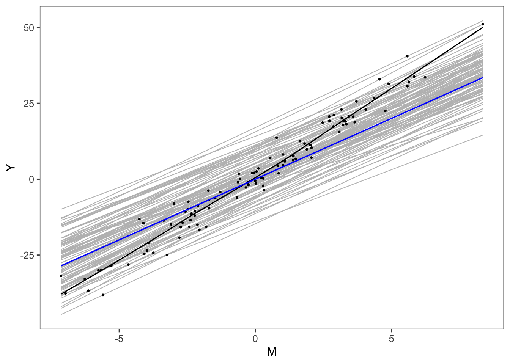

set.seed(42)
# This function takes in model specification and simulation parameters to return a function that can be used to simulate the data on the individual level
simulate_data_generator <- function(y_model, samplesize_per_trial, no_trials, sd.m_star = 3,
sd.y_star = 3, cor.m_star.y_star = 0.95,
num_treatment_group = 3,
mu.tau = c(0.5,1,2.5),
mu.gamma = c(0,1.5,3),
violate_A2 = FALSE,
violate_A3 = FALSE,
violate_A4 = FALSE
){
func <- function(){
# individual error structure
mu <- c(m_star=0, y_star=0, noise_beta_correlated = 0) # means for m_star and y_star
sd <- c(sd.m_star, sd.y_star, 0.5) # standard deviations
cormat <- rbind(c(1,cor.m_star.y_star, 0.8),c(cor.m_star.y_star,1, 0.8), c(0.8, 0.8, 1))
# var-cov matrix
covmat <- diag(sd) %*% cormat %*% diag(sd)
df <- mvrnorm(samplesize_per_trial*no_trials,mu,covmat)%>%
as_tibble()
# Set model parameters
phi <- runif(no_trials,-2,2)
theta <- runif(no_trials,-2,2)
trial_tau <- runif(no_trials,-3, 3)
trial_gamma <- rep(0,no_trials)
tau_innovation <- rnorm(samplesize_per_trial*no_trials,0,0.5)
gamma_innovation <- rnorm(samplesize_per_trial*no_trials,0,0.5)
beta_innovation <- rnorm(samplesize_per_trial*no_trials,0,0.5)
if (violate_A2){
beta_innovation <- df$noise_beta_correlated
}
if (violate_A3){
complement <- function(y, rho, x) {
# Generate a new vector correlates with y
if (missing(x)) x <- runif(length(y),-1, 1) # Optional: supply a default if `x` is not given
y.perp <- residuals(lm(x ~ y))
rho * sd(y.perp) * y + y.perp * sd(y) * sqrt(1 - rho^2)
}
trial_gamma <- complement(trial_tau, 0.8)
}
if (violate_A4){
trial_tau <- rep(0,no_trials)
}
df <-
df %>% mutate( trial_index=row_number()%%no_trials+1,
treatment_group=trial_index%%num_treatment_group+1,
Ti = rbernoulli(samplesize_per_trial*no_trials),
phi_s = phi[as.vector(trial_index)],
phi_s = phi[as.vector(trial_index)],
phi_s = phi[as.vector(trial_index)],
tau_s = mu.tau[as.vector(treatment_group)]+ trial_tau[as.vector(trial_index)],
theta_s = theta[as.vector(trial_index)],
gamma_s = mu.gamma[as.vector(treatment_group)]+trial_gamma[as.vector(trial_index)],
noise_tau=tau_innovation,
noise_gamma=gamma_innovation,
noise_beta=beta_innovation,
Mi = phi_s + tau_s*Ti+ m_star + noise_tau*Ti,
Yi = y_model(theta_s, gamma_s, Ti, Mi, y_star, noise_gamma, noise_beta)
)%>%
mutate(treatment_group=factor(treatment_group),
trial_index=factor(trial_index))
return(df)
}
return(func)
}
# Generate meta data from individual level data
get_meta_data <- function(individual_data, highest_degree = 1){
# This function run simple regressions to estimate ATE for one trial on individual level data .
regress_one_trial <- function(data, highest_degree){
result <- lm(Yi~1+Ti, data=data)%>%summary
delta_y <- result$coefficients['TiTRUE',1]
delta_y_ste <- result$coefficients['TiTRUE',2]
coeff_res = c('delta_y' = delta_y, 'delta_y_ste' = delta_y_ste)
for (i in 1: highest_degree) {
result <- lm(I(Mi^i)~1+Ti, data=data)%>%summary
temp_delta <- result$coefficients['TiTRUE',1]
names(temp_delta) = paste('delta_m', i, sep='')
temp_delta_ste <- result$coefficients['TiTRUE',2]
names(temp_delta_ste) = paste('delta_m', i, '_ste', sep='')
coeff_res = c(coeff_res, temp_delta, temp_delta_ste)
}
out <- bind_rows(coeff_res)
return(out)
}
meta_data <- individual_data%>%
group_by(trial_index,treatment_group)%>%
do(regress_one_trial(., highest_degree=highest_degree))%>%
ungroup
return(meta_data)
} \(Y_i = (\beta+\epsilon_{i}^{\beta})\times M_i + (\gamma_s+ \epsilon_{i}^{\gamma}) \times T_i + \theta_s + Y_i^*\)
simu_model_1 <- function(theta_s, gamma_s, Ti, Mi, y_star, noise_gamma, noise_beta){
beta <- 4
Yi = beta*Mi + theta_s + gamma_s*Ti + y_star + noise_gamma*Ti + noise_beta*Mi
return(Yi)
}# Draw graph
## Simple case, single treatment group
sim_data_func <- simulate_data_generator(simu_model_1, 400,20,
sd.y_star = 6,
num_treatment_group = 1,
mu.gamma = c(3))
sim_data <- sim_data_func()
true_dose <- function(m) 4*m
samp_df <- sim_data%>%sample_n(100)
draw_df <- bind_rows(samp_df%>%
mutate(id= row_number())%>%
mutate(Mi=range(samp_df%>%dplyr::select(Mi))[1],
Yi = simu_model_1(theta_s, gamma_s, Ti, Mi, y_star, noise_gamma, noise_beta)),
samp_df%>%
mutate(id= row_number())%>%
mutate(Mi=range(samp_df%>%dplyr::select(Mi))[2],
Yi = simu_model_1(theta_s, gamma_s, Ti, Mi, y_star, noise_gamma, noise_beta)))
fit <- lm(Yi ~ 1+ Mi + Ti, data=samp_df)
scale = 0.3
g <- ggplot(data = samp_df, aes(x=Mi, y=Yi)) +
geom_smooth(data =draw_df,
aes(x=Mi, y=Yi,group=id),
method='lm',se = F,
color='grey',
alpha = 0.5,
size =1.2* scale)+
geom_point(size =1.8 * scale)+
# geom_smooth(method='lm',formula = str(fit$call), se = F, color = 'black', size =0.2)+
geom_smooth(method='loess', se = F, color = 'black', size =1.8* scale)+
stat_function(fun=true_dose, color='blue', size=2*scale)+
labs(x='M',y='Y')+
theme_few()
g## `geom_smooth()` using formula 'y ~ x'
## `geom_smooth()` using formula 'y ~ x'
# ggsave('potential_outcomes.png',g,scale=scale)# Heterogeneous direct treatment effects
sim_data <- simulate_data_generator(simu_model_1,1000,10)
sim_data_temp <- sim_data()
sim_data_temp <- sim_data_temp%>%bind_cols(
as_tibble(model.matrix(~0+treatment_group,data = sim_data_temp)*sim_data_temp$Ti)%>%
rename_at(vars(matches("treatment_group")),list(~paste(.,"Ti",sep =""))))
# OLS SI (LSEM)
felm(Yi~1+Mi|factor(Ti):trial_index +trial_index|0|trial_index,data=sim_data_temp) %>% summary##
## Call:
## felm(formula = Yi ~ 1 + Mi | factor(Ti):trial_index + trial_index | 0 | trial_index, data = sim_data_temp)
##
## Residuals:
## Min 1Q Median 3Q Max
## -12.8213 -1.1114 0.0036 1.1176 13.4563
##
## Coefficients:
## Estimate Cluster s.e. t value Pr(>|t|)
## Mi 4.92506 0.01052 468.1 <2e-16 ***
## ---
## Signif. codes: 0 '***' 0.001 '**' 0.01 '*' 0.05 '.' 0.1 ' ' 1
##
## Residual standard error: 2.092 on 9979 degrees of freedom
## Multiple R-squared(full model): 0.9849 Adjusted R-squared: 0.9849
## Multiple R-squared(proj model): 0.9809 Adjusted R-squared: 0.9809
## F-statistic(full model, *iid*):3.263e+04 on 20 and 9979 DF, p-value: < 2.2e-16
## F-statistic(proj model): 2.192e+05 on 1 and 9 DF, p-value: < 2.2e-16# IV (sobel)
felm(Yi~1+Ti|trial_index|(Mi~trial_index:factor(Ti))|trial_index,data=sim_data_temp)%>%summary ##
## Call:
## felm(formula = Yi ~ 1 + Ti | trial_index | (Mi ~ trial_index:factor(Ti)) | trial_index, data = sim_data_temp)
##
## Residuals:
## Min 1Q Median 3Q Max
## -16.6696 -2.0697 -0.0936 2.0101 21.2822
##
## Coefficients:
## Estimate Cluster s.e. t value Pr(>|t|)
## TiTRUE 1.5219 0.3975 3.829 0.00404 **
## `Mi(fit)` 4.0115 0.2214 18.117 2.17e-08 ***
## ---
## Signif. codes: 0 '***' 0.001 '**' 0.01 '*' 0.05 '.' 0.1 ' ' 1
##
## Residual standard error: 3.529 on 9988 degrees of freedom
## Multiple R-squared(full model): 0.9571 Adjusted R-squared: 0.9571
## Multiple R-squared(proj model): 0.9502 Adjusted R-squared: 0.9502
## F-statistic(full model, *iid*): 4429 on 11 and 9988 DF, p-value: < 2.2e-16
## F-statistic(proj model): 224.2 on 2 and 9 DF, p-value: 2.102e-08
## F-statistic(endog. vars):328.2 on 1 and 9 DF, p-value: 2.168e-08# IV equivalent
iv_form <- as.formula(paste("Yi~1+",
paste(grep("treatment_group.*Ti", names(sim_data_temp), value=TRUE),
collapse = " + "),
"|trial_index|(Mi~trial_index:factor(Ti))|trial_index") )
felm(iv_form,data=sim_data_temp)%>%summary ##
## Call:
## felm(formula = iv_form, data = sim_data_temp)
##
## Residuals:
## Min 1Q Median 3Q Max
## -16.4798 -2.0000 -0.1057 1.9148 21.7856
##
## Coefficients:
## Estimate Cluster s.e. t value Pr(>|t|)
## treatment_group1Ti 0.05094 0.08840 0.576 0.579
## treatment_group2Ti 1.49333 0.06467 23.092 2.55e-09 ***
## treatment_group3Ti 2.96457 0.27366 10.833 1.83e-06 ***
## `Mi(fit)` 4.02955 0.03665 109.932 2.16e-15 ***
## ---
## Signif. codes: 0 '***' 0.001 '**' 0.01 '*' 0.05 '.' 0.1 ' ' 1
##
## Residual standard error: 3.44 on 9986 degrees of freedom
## Multiple R-squared(full model): 0.9593 Adjusted R-squared: 0.9592
## Multiple R-squared(proj model): 0.9527 Adjusted R-squared: 0.9527
## F-statistic(full model, *iid*): 3965 on 13 and 9986 DF, p-value: < 2.2e-16
## F-statistic(proj model): 4141 on 4 and 9 DF, p-value: 1.114e-14
## F-statistic(endog. vars):1.209e+04 on 1 and 9 DF, p-value: 2.165e-15# Liml
felm(iv_form,data=sim_data_temp, kclass='liml')%>%summary ##
## Call:
## felm(formula = iv_form, data = sim_data_temp, kclass = "liml")
##
## Residuals:
## Min 1Q Median 3Q Max
## -16.707 -2.029 -0.102 1.960 22.036
##
## Coefficients:
## Estimate Cluster s.e. t value Pr(>|t|)
## treatment_group1Ti 0.08836 0.08789 1.005 0.341
## treatment_group2Ti 1.50426 0.06696 22.466 3.25e-09 ***
## treatment_group3Ti 2.99915 0.26908 11.146 1.44e-06 ***
## Mi 4.00670 0.03959 101.201 4.56e-15 ***
## ---
## Signif. codes: 0 '***' 0.001 '**' 0.01 '*' 0.05 '.' 0.1 ' ' 1
##
## Residual standard error: 3.499 on 9967 degrees of freedom
## Multiple R-squared(full model): 0.9579 Adjusted R-squared: 0.9578
## Multiple R-squared(proj model): 0.9512 Adjusted R-squared: 0.951
## F-statistic(full model, *iid*): 7093 on 32 and 9967 DF, p-value: < 2.2e-16
## F-statistic(proj model): 3404 on 4 and 9 DF, p-value: 2.689e-14# CMMA
meta_data <- get_meta_data(sim_data_temp, 1)
lm(delta_y ~ 1 + treatment_group + delta_m1, data=meta_data)%>%summary##
## Call:
## lm(formula = delta_y ~ 1 + treatment_group + delta_m1, data = meta_data)
##
## Residuals:
## Min 1Q Median 3Q Max
## -0.66822 -0.13900 0.07165 0.13326 0.44363
##
## Coefficients:
## Estimate Std. Error t value Pr(>|t|)
## (Intercept) 0.05102 0.24389 0.209 0.84121
## treatment_group2 1.44227 0.29343 4.915 0.00267 **
## treatment_group3 2.91337 0.30040 9.698 6.90e-05 ***
## delta_m1 4.02950 0.07330 54.973 2.43e-09 ***
## ---
## Signif. codes: 0 '***' 0.001 '**' 0.01 '*' 0.05 '.' 0.1 ' ' 1
##
## Residual standard error: 0.3677 on 6 degrees of freedom
## Multiple R-squared: 0.9983, Adjusted R-squared: 0.9974
## F-statistic: 1145 on 3 and 6 DF, p-value: 1.159e-08\(Y_i = (\beta_1+\epsilon_{i}^{\beta})\times M_i +\beta_2*Mi^2 + (\gamma_s+ \epsilon_{i}^{\gamma}) \times T_i + \theta_s + Y_i^*\)
# Second model second degree polynomial
# Y_i = beta[1]*Mi + beta[2]*Mi^2 + theta_s + gamma_s*Ti + y_star
simu_model_2 <- function(theta_s, gamma_s, Ti, Mi, y_star, noise_gamma, noise_beta){
beta <- c(4, 2)
Yi = beta[1]*Mi + beta[2]*Mi^2 + theta_s + gamma_s*Ti + y_star + noise_gamma*Ti + noise_beta*Mi
return(Yi)
}\(Y_i = (\beta_1+\epsilon_{i}^{\beta})\times M_i +\beta_2*Mi^2 + \beta_3*Mi^3+ (\gamma_s+ \epsilon_{i}^{\gamma}) \times T_i + \theta_s + Y_i^*\)
# Third model third degree polynomial
# Y_i = beta[1]*Mi + beta[2]*Mi^2 + beta[3]*Mi^3 + theta_s + gamma_s*Ti + y_star
simu_model_3 <- function(theta_s, gamma_s, Ti, Mi, y_star, noise_gamma, noise_beta){
beta <- c(4, 0, 5)
Yi = beta[1]*Mi + beta[2]*Mi^2 + beta[3]*Mi^3 + theta_s + gamma_s*Ti + y_star + noise_gamma*Ti
return(Yi)
}# Estimation results from single simulation
MC_single_sim<- function(index,simulate_data_f,CMMA_estimator_only=FALSE, DRF_degree=1, wald_test=FALSE){
# if(index %%10==0){
# print(paste("Prcessing simulation no.",index))
# }
# get the simulated data
sim_data <- simulate_data_f()
# construct interaction terms between treatment groups and Ti
sim_data <- sim_data%>%bind_cols(
as_tibble(model.matrix(~0+treatment_group,data = sim_data)*sim_data$Ti)%>%
rename_at(vars(matches("treatment_group")),list(~paste(.,"Ti",sep =""))))
# prepare output data
out <- data.frame(matrix(ncol = 3, nrow = 0))
colnames(out) <- c("valname", "value", "model")
out <- as_tibble(out)
log_results <- function(out, m_vars, regres_summary, model_desc, IV=FALSE){
for (i in seq_along(m_vars)){
var <- m_vars[i]
if (IV){
var <- paste('`',var,'(fit)','`',sep='')
}
# Point estimates
point_est <- regres_summary$coefficients[, 1]
# Standard Error
std_est <- regres_summary$coefficients[, 2]
if (length(point_est)==1 & length(m_vars)==1){
names(point_est) = var
names(std_est) = var
}
out <- out %>%
add_row(valname = paste('M',i,'_coef',sep = ''),
value=point_est[var],
model = model_desc)%>%
add_row(valname = paste('M',i,'_std',sep = ''),
value=std_est[var],
model = model_desc)
}
return(out)
}
if (!wald_test){
# get meta data
meta_data <- get_meta_data(sim_data, DRF_degree)
m_vars<-paste('delta_m',seq(1:DRF_degree), sep='')
## Proposed method (CMMA)
regres <- lm(formula(paste('delta_y ~ 1 +treatment_group + ',
paste(m_vars, collapse = '+'))),
data=meta_data)%>%summary
out <- out%>%log_results(m_vars, regres, 'CMMA')
if (CMMA_estimator_only == FALSE) {
M_vars <- paste('I(Mi^',seq(1:DRF_degree),')', sep='')
## Simple pooled OLS (OLS SI)
regres <- felm(formula(paste('Yi~1+',
paste(M_vars, collapse = '+'),
'|factor(Ti):trial_index +trial_index|0|trial_index')),
data=sim_data)%>%summary
out <- out%>%log_results(M_vars, regres, 'pooled ols')
## IV method (small)
regres <- felm(formula(paste('Yi~1+Ti|trial_index|(',
paste(M_vars, collapse ='|'),
'~trial_index:Ti)|trial_index')),
data=sim_data)%>%summary
out <- out%>%log_results(M_vars, regres, 'IV (small)', IV=T)
## proposed IV equivalent
iv_form <- as.formula(paste("Yi~1+",
paste(grep("treatment_group.*Ti", names(sim_data), value=TRUE),
collapse = " + "),
"|trial_index|(",
paste(M_vars, collapse ='|'),
"~trial_index:factor(Ti))|0") )
regres <- felm(iv_form,data=sim_data)%>%summary
out <- out%>%log_results(M_vars, regres, 'proposed IV equivalent', IV=T)
## Liml
regres <- felm(iv_form,data=sim_data,kclass='liml')%>%summary
out <- out%>%log_results(M_vars, regres, 'Liml equivalent')
}
}
else
{
# get meta data
meta_data <- get_meta_data(sim_data, 3)
# This is code for wald test when hypothesized degree of DRF is 3
m_vars<-paste('delta_m',seq(1:3), sep='')
## Proposed method (CMMA) with just M
regres <- lm(formula(paste('delta_y ~ 1 +treatment_group + ',
paste(m_vars[1], collapse = '+'))),
data=meta_data)%>%summary
out <- out%>%log_results(m_vars[1], regres, 'CMMA with M')
## Proposed method (CMMA) with just M and M^2
regres <- lm(formula(paste('delta_y ~ 1 +treatment_group + ',
paste(m_vars[1:2], collapse = '+'))),
data=meta_data)%>%summary
out <- out%>%log_results(m_vars[1:2], regres, 'CMMA with M, M^2')
## Proposed method (CMMA) with just M, M^2, and M^3
regres_wald <- lm(formula(paste('delta_y ~ 1 +treatment_group + ',
paste(m_vars[1:3], collapse = '+'))),
data=meta_data)
regres <- regres_wald %>%summary
out <- out%>%log_results(m_vars[1:3], regres, 'CMMA with M, M^2 and M^3')
# Wald Test
# regress cubic
wald <- wald.test(b = coef(regres_wald), Sigma = vcov(regres_wald), Terms = 4)
out <- out %>%
add_row(valname = "p value, m", value=wald$result$chi2['P'], model ='wald test')
wald <- wald.test(b = coef(regres_wald), Sigma = vcov(regres_wald), Terms = 5)
out <- out %>%
add_row(valname = "p value, m2", value=wald$result$chi2['P'], model ='wald test')
wald <- wald.test(b = coef(regres_wald), Sigma = vcov(regres_wald), Terms = 6)
out <- out %>%
add_row(valname = "p value, m3", value=wald$result$chi2['P'], model ='wald test')
wald <- wald.test(b = coef(regres_wald), Sigma = vcov(regres_wald), Terms = 4:5)
out <- out %>%
add_row(valname = "p value, m m2", value=wald$result$chi2['P'], model ='wald test')
wald <- wald.test(b = coef(regres_wald), Sigma = vcov(regres_wald), Terms = c(4,6))
out <- out %>%
add_row(valname = "p value, m m3", value=wald$result$chi2['P'], model ='wald test')
wald <- wald.test(b = coef(regres_wald), Sigma = vcov(regres_wald), Terms = 5:6)
out <- out %>%
add_row(valname = "p value, m2 m3", value=wald$result$chi2['P'], model ='wald test')
wald <- wald.test(b = coef(regres_wald), Sigma = vcov(regres_wald), Terms = 4:6)
out <- out %>%
add_row(valname = "p value, m m2 m3", value=wald$result$chi2['P'], model ='wald test')
}
out <- out%>%mutate(simulation_index=index)
return(out)
}# This function runs the monte carlo simulation
mc_model_main <- function(y_model, samplesize_per_trial, no_trials, no_sims=100, CMMA_estimator_only=FALSE, DRF_degree=1, wald_test=FALSE,seed=42, ...){
set.seed(seed)
simulate_data_f = simulate_data_generator(y_model,samplesize_per_trial,
no_trials, ...)
# parameters for monte carlo
outcomes <- mclapply(1:no_sims, MC_single_sim,
simulate_data_f=simulate_data_f,
CMMA_estimator_only=CMMA_estimator_only,
DRF_degree=DRF_degree,
wald_test=wald_test )
outcomes <- outcomes %>% bind_rows%>%
mutate("samplesize_per_trial"=samplesize_per_trial,"no_trials"=no_trials)
return(outcomes)
}
# Compute coverage probabilities for the 90% and 95% CI and other stats from simulation results
stats_summary <- function(data,model_name,est_valname,std_valname, true_value,level=0.95){
remove_outliers <- function(x, na.rm = TRUE, ...) {
qnt <- quantile(x, probs=c(.25, .75), na.rm = na.rm, ...)
H <- 5 * IQR(x, na.rm = na.rm)
y <- x
y[x < (qnt[1] - H)] <- NA
y[x > (qnt[2] + H)] <- NA
y
}
df <- data%>%filter(model==model_name)%>%
spread(valname,value)%>%
dplyr::select(est_valname,std_valname,samplesize_per_trial,no_trials)
df <- df%>%rename(estimate=1, std=2)%>%
mutate_at(vars(estimate,std), remove_outliers)%>%
mutate(CI.up = estimate + qnorm(0.5+level/2)*std,
CI.lo = estimate - qnorm(0.5+level/2)*std,
in_ci=CI.lo < true_value & true_value < CI.up)%>%
summarise(ci_covprob = mean(in_ci,na.rm=T),
point.est = mean(estimate,na.rm=T),
mse=mean((estimate-true_value)^2,na.rm=T),
samplesize_per_trial=mean(samplesize_per_trial),
no_trials=mean(no_trials),
n= sum(!is.na(estimate)))%>%
mutate(bias = point.est-true_value,
rmse=sqrt(mse),
Estimator=model_name)
return(df)
}
simulation_summary <- function(data, models,est_valname,std_valname, true_value, level=0.95){
lapply(models,
stats_summary,
data=data,
est_valname=est_valname,
std_valname=std_valname,
true_value=true_value)%>%
bind_rows()
}
get_avg_simulated_estimate <- function(data, model_name,est_valnames){
data%>%filter(model==model_name)%>%
filter(valname %in% est_valnames)%>%
spread(valname,value)%>%
dplyr::select(!!est_valnames)%>%
summarise_all(mean)
}
# Get wald test result
wald_test_summary <- function(data, level=0.95){
data%>%filter(model=='wald test')%>%
spread(valname,value)%>%
dplyr::select(-model,-samplesize_per_trial,-no_trials)%>%
summarise_all(function(x) mean(x<(1-level)))
}# Table output
# ## Increase samplesize per trial
out <- lapply(c(200,500,1000), function(n) mc_model_main(simu_model_1, n, 50))
out%>%
map(simulation_summary,
models=c('CMMA','proposed IV equivalent','pooled ols','IV (small)', 'Liml equivalent'),
est_valname='M1_coef',std_valname='M1_std', 4)%>%
bind_rows()%>%
mutate(ci_covprob = paste(round(ci_covprob*100,1),'%',sep = ''))%>%
dplyr::select(samplesize_per_trial,no_trials,Estimator,bias,ci_covprob)%>%
group_by(samplesize_per_trial)%>%
group_split()%>%
bind_cols()%>%
dplyr::select(-matches('Estimator.'),
-starts_with('no_trials'),
-starts_with('samplesize_per_trial'))%>%
mutate(Estimator = factor(Estimator,
labels = c('LIML','CMMA','Full Sample 2SLS','Sobel(2008)' ,"LSEM {Baron1986}"),
levels=c('Liml equivalent','CMMA', 'proposed IV equivalent', 'IV (small)','pooled ols')))%>%
arrange(Estimator)%>%
kable(format="html",digits = 3,position = "center",align = "c",
col.names = c("Estimator",
"Bias","95% CI coverage",
"Bias","95% CI coverage",
"Bias","95% CI coverage"),escape = F)%>%
add_header_above(escape = F,c(" " = 1, "$N_{per}=200$" = 2,"$N_{per}=500$" = 2,"$N_{per}=1000$"=2))| Estimator | Bias | 95% CI coverage | Bias | 95% CI coverage | Bias | 95% CI coverage |
|---|---|---|---|---|---|---|
| LIML | -0.005 | 92% | -0.003 | 95% | 0.001 | 95% |
| CMMA | 0.050 | 71% | 0.019 | 90% | 0.013 | 91% |
| Full Sample 2SLS | 0.050 | 69% | 0.019 | 89% | 0.013 | 90% |
| Sobel(2008) | 0.292 | 4% | 0.283 | 1% | 0.274 | 4% |
| LSEM {Baron1986} | 0.934 | 0% | 0.938 | 0% | 0.937 | 0% |
# Table output
# ## Assumption Violation
out3 <- lapply(c(200,500,1000),
function(n) mc_model_main(simu_model_1,n,50, CMMA_estimator_only = T))%>%
map(mutate,violation='None')
out3_A2 <- lapply(c(200,500,1000),
function(n) mc_model_main(simu_model_1,n,50, CMMA_estimator_only = T, violate_A2 =T))%>%
map(mutate,violation='A2')
out3_A3 <- lapply(c(200,500,1000),
function(n) mc_model_main(simu_model_1,n,50, CMMA_estimator_only = T, violate_A3 =T))%>%
map(mutate,violation='A3')
out3_A4 <- lapply(c(200,500,1000),
function(n) mc_model_main(simu_model_1,n,50, CMMA_estimator_only = T, violate_A4 =T))%>%
map(mutate,violation='A4')
lapply(list(out3, out3_A2, out3_A3, out3_A4), function(data){
violation_str <- data[[1]]%>%select(violation)%>%pluck(1,1)
data%>%map(simulation_summary,
models=c('CMMA'),
est_valname='M1_coef',std_valname='M1_std', 4)%>%
bind_rows()%>%
mutate(ci_covprob = paste(round(ci_covprob*100,1),'%',sep = ''),
violation=!!violation_str)
}) %>%
bind_rows()%>%
dplyr::select(samplesize_per_trial,no_trials,violation,bias,ci_covprob)%>%
group_by(samplesize_per_trial)%>%
group_split()%>%
bind_cols()%>%
dplyr::select(-matches('violation.'),
-starts_with('no_trials'),
-starts_with('samplesize_per_trial'))%>%
mutate(violation = factor(violation,
levels=c('None','A2', 'A3', 'A4')))%>%
arrange(violation)%>%
kable(format="html",digits = 3,booktabs = T,position = "center",align = "c",
col.names = c("Estimator",
"Bias","95% CI coverage",
"Bias","95% CI coverage",
"Bias","95% CI coverage"))%>%
add_header_above(escape = F,c(" " = 1, "$N_{per}=200$" = 2,"$N_{per}=500$" = 2,"$N_{per}=1000$"=2))| Estimator | Bias | 95% CI coverage | Bias | 95% CI coverage | Bias | 95% CI coverage |
|---|---|---|---|---|---|---|
| None | 0.050 | 71% | 0.022 | 86% | 0.013 | 89% |
| A2 | 0.066 | 74% | 0.020 | 89% | 0.013 | 91% |
| A3 | 0.486 | 0% | 0.471 | 0% | 0.463 | 0% |
| A4 | 0.930 | 0% | 0.924 | 0% | 0.937 | 0% |
# Wald test table
## mu(m) = beta2*m
out_model1 <- mc_model_main(simu_model_1,1000,100, DRF_degree=3, wald_test= TRUE)
## mu(m) = beta2*m + beta3*m^2
out_model2 <- mc_model_main(simu_model_2,1000,100, DRF_degree=3, wald_test= TRUE)
## mu(m) = beta2*m + 0 + beta4*m^3
out_model3 <- mc_model_main(simu_model_3,1000,100, DRF_degree=3, wald_test= TRUE)
bind_rows(
out_model1%>%
wald_test_summary%>%
dplyr::select(`p value, m3`,`p value, m2 m3`,`p value, m m2 m3`)%>%
mutate(`$\\mu(m)$`='$4m$',
degree = 1,
estimate=out_model1 %>%
get_avg_simulated_estimate('CMMA with M', c('M1_coef'))%>%
as_vector()%>%round(3)%>%paste(collapse=', ')),
out_model2%>%wald_test_summary%>%
dplyr::select(`p value, m3`,`p value, m2 m3`,`p value, m m2 m3`)%>%
mutate(`$\\mu(m)$`='$4m + 2m^2$',
degree = 2,
estimate=out_model2 %>%
get_avg_simulated_estimate('CMMA with M, M^2',c('M1_coef','M2_coef'))%>%
as_vector()%>%round(3)%>%paste(collapse=', ')),
out_model3%>%wald_test_summary%>%
dplyr::select(`p value, m3`,`p value, m2 m3`, `p value, m m2 m3`)%>%
mutate(`$\\mu(m)$`='$4m + 0m^2 + 5m^3$',
degree = 3,
estimate=out_model3 %>%
get_avg_simulated_estimate('CMMA with M, M^2 and M^3',c('M1_coef','M2_coef', 'M3_coef'))%>%
as_vector()%>%round(3)%>%paste(collapse=', ')))%>%
dplyr::select(`$\\mu(m)$`,everything())%>%
kable(format="html",digits = 2,booktabs = T,escape=FALSE, position = "center",align = "c",
col.names = c("$\\mu(m)$","$H_0: \\beta_3 = 0$","$H_0: \\beta_2 = \\beta_3 = 0$",
"$H_0: \\beta_1=\\beta_2=\\beta_3= 0$", "Highest degree used",
"Results"))%>%
add_header_above(c(" "=1, "% of Wald Tests Rejecting $H_0$" = 3,"CMMA Estimation"=2))| \(\mu(m)\) | \(H_0: \beta_3 = 0\) | \(H_0: \beta_2 = \beta_3 = 0\) | \(H_0: \beta_1=\beta_2=\beta_3= 0\) | Highest degree used | Results |
|---|---|---|---|---|---|
| \(4m\) | 0.07 | 0.11 | 1 | 1 | 4.01 |
| \(4m + 2m^2\) | 0.04 | 1.00 | 1 | 2 | 4.012, 1.999 |
| \(4m + 0m^2 + 5m^3\) | 1.00 | 1.00 | 1 | 3 | 4.013, -0.001, 5 |